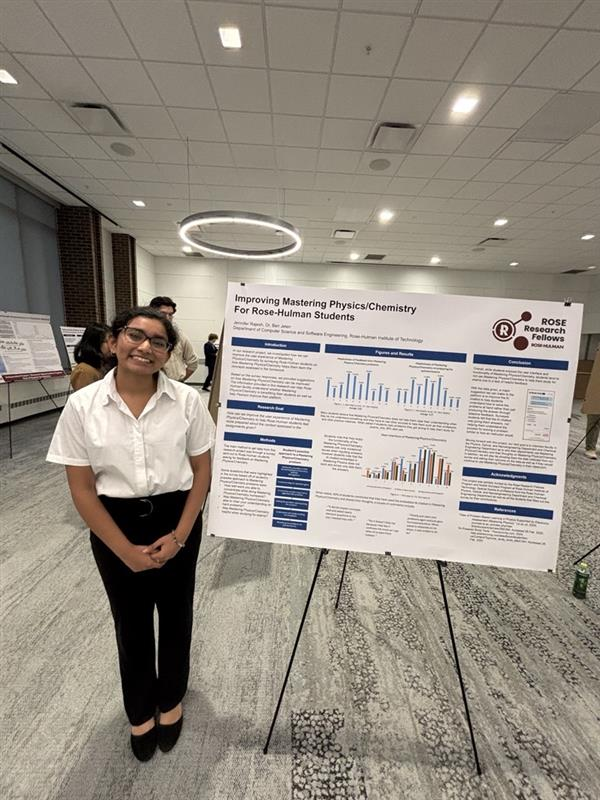
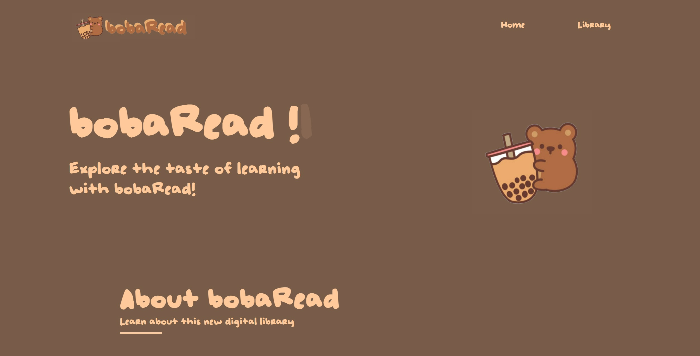
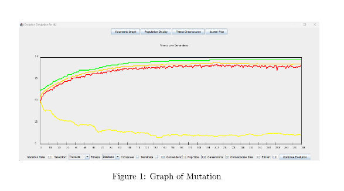

Portfolio Content
Portfolio
Project #1: HCI & CS Education Research Project
Description:
Responded to the research question-how can we improve Pearson's Mastering Physics/Chemistry for Rose-Hulman Students to help them feel more prepared about the content assigned?
Technology used
Google Forms for data collection and Microsoft Excel for graph creation
Project #2: bobaRead.com
Description:
Designed an educational website for children 3rd-5th grade in the school district to learn about different topics through handwritten choose-your-own-adventure stories and built-in lessons
Technology used:
HTML, CSS, and JavaScript
Link to the project
bobaRead.com Project #3: CSSE 220 Genetics Research Project
Description:
Created a Java Project understand the idea of "survival of the fittest" and how genetic issues travel within a population over generations
Technology used:
Java
